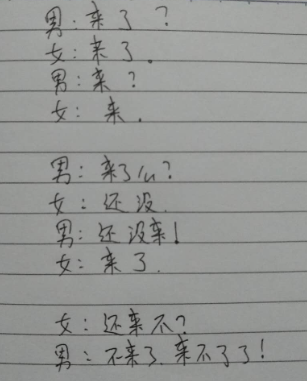

第一节：精讲
1.程序的三大结构
顺序结构：

选择（分支）结构：

循环结构：
下回分解～～～
2.程序的单分支结构 if 语句
if(做我对象好吗？){ 👌☺
走～～～ 一起
}
if(做我对象好吗？){ ✋(•ˇ‸ˇ•)
走？ 都不约了，你还想发生啥
}
当条件判断为真true时，执行花括号内的语句，如果条件为假false，跳过花括号内的语句
if(条件){
执行语句
}
if(条件){
执行语句1，为真时执行
}else{
执行语句2，为假时执行
}
当条件判断为真true时，执行语句1，如果条件为假false，执行语句2。
if()括号里面的东西我们通常也叫它逻辑点
为真true，为假false，这是布尔值，需要通过逻辑运算符得到。
但是：
if(1){
alert("会弹出来么？");
}
1是数值型，不是布尔值，更不是true？为什么会执行花括号内的语句了呢？
在一些特定的情况下，计算机会进行一些隐式转换，他和强制类型转换不一样，他不需要你做什么，会自动对数据类型进行转换
在运算中，if(小括号)中的语句会发生隐式类型转换。
1.运算中的隐式类型转换：
var a = "1",b = 2;
a + b = ???
+号有两种含义：数学中的＋号运算符；字符串的拼接。优先字符串拼接，所以在检测到＋号左右两边存在字符串的时候，会自动将另一边不是字符串的数据，转成字符串，再进行操作
a - b = ???
除了+号有两层意义为外，-*/号只有数学意义，所以当进行-*/的时候，默认将运算符两边的数据类型隐式转换成数字类型再进行运算
2.if(小括号)内的隐式类型转换。
if()中只需要布尔值，那么在if判断中，会把括号内所有的数据类型，都隐式转换成布尔型。
在if()中，非零数字都会转成true，非空字符串都会转成true；这是两条基础规则，其他规则后面会提到。
alert(1 == true)
2.程序的多分支switch语句／break关键字
switch()多分支语句
注意：在switch()内，不会发生隐式数据类型转换
switch(){
case 0:alert("零");
break;
case 1:alert("一");
case 2:alert("二");
default:alert("不识别的数字");
}
switch()内，不会做判断，在case身上判断这个值是否符合。
switch()内，不能做判断，同时在case后也不能做判断，
注意：如果判定的是范围，不要使用switch语句；判定具体数据的时候，才使用switch
案例：判断星期几；判断成绩；
注意switch的应用场景：有多个确定值需要判断的时候
注意case语句的穿透，要加break语句：如果程序没有break语句，那么解析器会继续向下解析
注意default相当于if语句中的else，当以上条件都不满足的时候，执行default
判断用户输入的数字是否为闰年？
第二节：应用
1.判断一个整数属于哪个范围：大于0；小于0；等于0
2.判断一个整数是偶数还是奇数，并输出判断结果
3.开发一款软件，根据公式（身高-108）*2=体重，可以有5kg左右的浮动。来观察测试者体重是否合适
判断学生成绩，switch
大于60及格，60~70中等，70~80良好，80~90优秀，90~100学霸
第三节：精讲
1.案例：输入年份，计算某一年是否为闰年
能被4整除且不能被100整除，或者能被400整除
2.案例：输入数字，显示星期几
假设1号就是周一
第四节：应用
1.案例：输入成绩分数，判定成绩等级(if和switch两种写法)
2.输入月份，显示当月的天数
要求：1) 利用case穿透简化代码
第五节：综合应用
1.根据一个数字日期，判断这个日期是这一年的第几天例如： 20160211，计算后结果为42
2.制作一个表单
<style type="text/css">
*{padding: 0; margin: 0;}
html,body{
width: 100%; height: 100%;
background: #9CBC2C;
font-family: "微软雅黑";
}
ul,ol,input { list-style: none; border: none;}
.main{ width:500px; margin: 50px auto; }
.main .step{
padding-left: 43px;
color: #384313; font-size: 16px; font-weight: bold;
text-shadow: 0 1px 1px #c0d576; line-height: 40px;
}
.main ul li {
width: 400px; height: 25px;
padding-left: 10px;padding-top: 5px; padding-bottom: 5px;
background: rgba(255, 255, 255, .3);
margin: auto; border: solid 2px #e3ebc3;
border-color: rgba(255, 255, 255, .6);
border-radius: 5px; margin-bottom: 4px;
}
.main ul li label{
font-size: 13px; width: 110px; color: #111111;
padding-left: 5px;
}
.main ul li input{
border-radius: 3px;
border: #FC3 solid 1px;
width: 250px; height: 25px; outline: none;
padding-left: 5px; margin-left: 35px;
}
.main .savebtn{
display: block; width: 140px; height: 40px; line-height: 40px;
text-align: center; color: #E3EBC3;
font-weight: bold; cursor: pointer;
border-radius: 5px; margin: 10px auto;
box-shadow: 1px 1px 1px 0px gray;
background: linear-gradient(#50B9FD,#1158A8);
}
</style>
<body>
<div class="main">
<span class="step">Step1:用户详细资料</span>
<ul>
<li>
<label>用户名称:</label>
<input type="text" placeholder="请输入用户名" />
</li>
<li>
<label>邮件地址:</label>
</li>
<li>
<label>练习电话:</label>
<input type="text" placeholder="18566666666" />
</li>
</ul>
<span class="step">Step2:家庭住址（收货地址）</span>
<ul>
<li>
<label>详细地址:</label>
<input type="text" placeholder="请输入用户名" />
</li>
<li>
<label>邮政编码:</label>
</li>
<li>
<label>国 家:</label>
<input type="text" placeholder="13539008452" />
</li>
</ul>
<span class="savebtn">保存</span>
</div>
</body>
要求：
1）点击保存按钮时，使用JS判断用户的联系电话是否为纯数字，如果用户输入有错误，使用alert()弹框警告
2）判断用户名是否填写，如果空白，使用alert弹框警告
补充：
1.错误提示信息。改bug
missing ) after argument list 丢失一半括号
Unexpected token ) 意外符号
oYeear is not defined 没有声明oYeear
Cannot read property 'value' of null 无法获取空值的value
Unexpected identifier 意外的标识符
。。。。。。
not defined没有声明
undefined没有赋值
2.三目运算符
var a = 6;
if(a<10){
a = "0"+a;
}else{
a = a;
}
上面的代码，等价于下面的代码
var a = 6;
a = a<10 ? "0"+a : a;